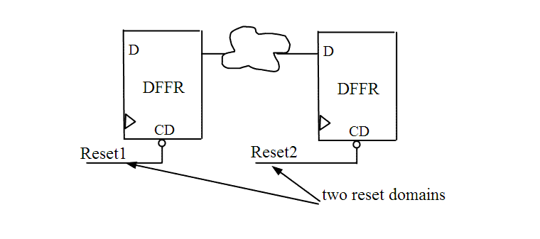

| Description | This rule fires when Leda detects more than one reset domain in the design. Multiple reset domains can confuse the initial state of the design and cause signal conflicts. This also has a adverse effect on reset tree analysis and testing. It is better to use only one reset domain in critical parts of the design. |
| Policy | DESIGN |
| Ruleset | RESETS |
| Language | VHDL/Verilog |
| Type | Hardware |
| Severity | Error |
This is an example of invalid Verilog code, followed by a circuit diagram that illustrates the problem:
module ntl_rst01_top ; ... //DFFR - flip-flop with reset, CD is the reset pin DFFR U0(.D(Din), .CP(Clock), .CD(Reset1) .Q(Dout_temp)); // OK -- one reset domain DFFR U1(.D(Dout_temp), .CP(Clock), .CD(Reset2) .Q(Dout)); // NTL_RST01 fires -- another reset domain ... endmodule